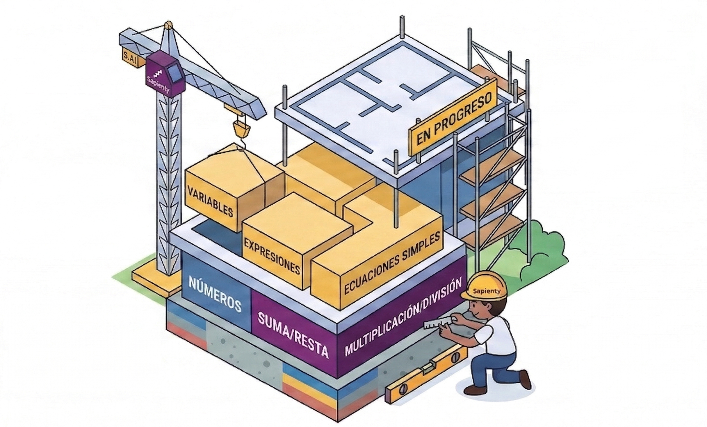
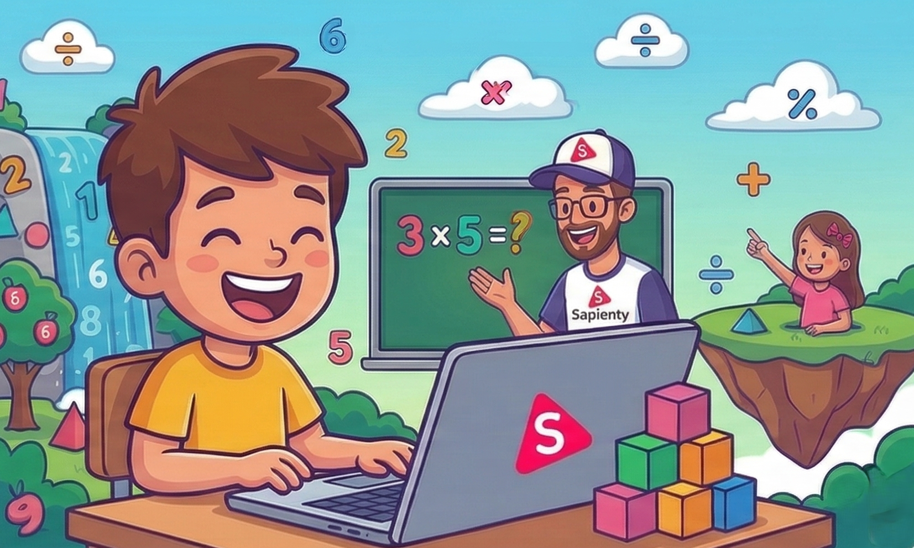
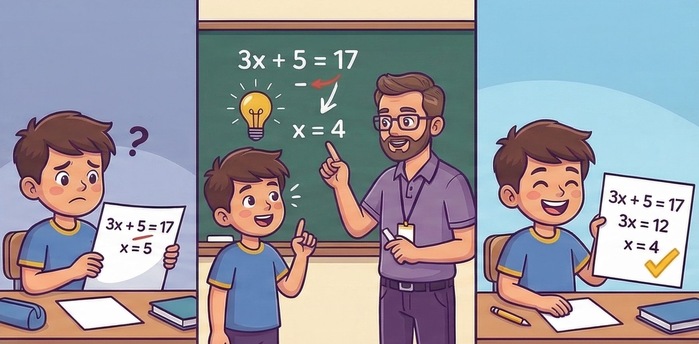
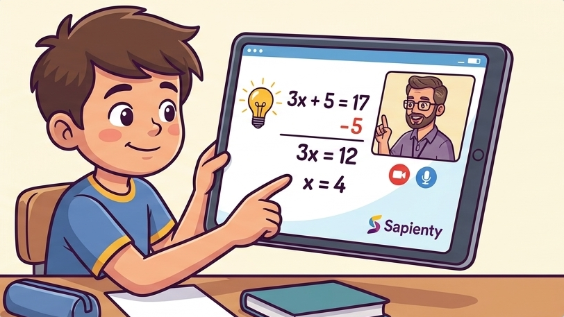

Estudiar matemáticas es como construir un edificio: no se puede avanzar al siguiente piso sin antes haber dejado el inferior perfectamente cimentado. En Sapienty los estudiantes retoman desde donde se quedaron. ¡Como debe ser!

Creemos que aprender matemáticas debería ser como un juego. En Sapienty las clases son divertidas, llenas de color, con profes pacientes y buena onda. Con duración de 30 minutos al día, los estudiantes se conectan con gusto.

¿Alguien alguna vez ha aprendido a meter un gol solo escuchando? La mejor forma de aprender es intentándolo, aprendiendo de nuestros errores y teniendo a un profe experto acompañándote. La práctica favorece la retención.

Todos aprendemos a un ritmo y de una forma diferente. Es por eso que en todas nuestras clases hay un sólo estudiante y un profesor. Además de una inteligencia artificial que personaliza el aprendizaje.
